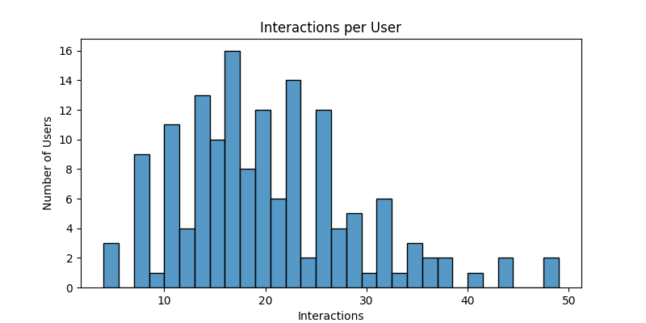

Number of users: 150
Number of items: 199
Total interactions: 1000
| Factors | Regularization | Iterations | Precision@5 |
|---|---|---|---|
| 10 | 0.01 | 15 | 7 |
| 10 | 0.01 | 20 | 6 |
| 10 | 0.01 | 30 | 4 |
| 10 | 0.1 | 15 | 8 |
| 10 | 0.1 | 20 | 6 |
| 10 | 0.1 | 30 | 5 |
| 10 | 0.5 | 15 | 5 |
| 10 | 0.5 | 20 | 4 |
| 10 | 0.5 | 30 | 6 |
| 20 | 0.01 | 15 | 6 |
| 20 | 0.01 | 20 | 5 |
| 20 | 0.01 | 30 | 5 |
| 20 | 0.1 | 15 | 4 |
| 20 | 0.1 | 20 | 5 |
| 20 | 0.1 | 30 | 5 |
| 20 | 0.5 | 15 | 6 |
| 20 | 0.5 | 20 | 6 |
| 20 | 0.5 | 30 | 5 |
| 30 | 0.01 | 15 | 6 |
| 30 | 0.01 | 20 | 5 |
| 30 | 0.01 | 30 | 6 |
| 30 | 0.1 | 15 | 6 |
| 30 | 0.1 | 20 | 6 |
| 30 | 0.1 | 30 | 5 |
| 30 | 0.5 | 15 | 6 |
| 30 | 0.5 | 20 | 5 |
| 30 | 0.5 | 30 | 7 |